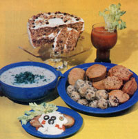
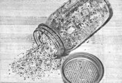

Don't just stuff your sprouts in sandwiches and salads. Try putting the tender, crispy greens in a whole range of dishes and enjoy . . .
As many of you know, there's something almost addictive about sprouting: Once most folks have grown one jar of the nutritious little shoots (and discovered how easy it is to produce salad greens for merely pennies per day), they've become hooked on the process. As a result, avid sprouters occasionally have problems trying to use up the energy-packed morsels . . . which frequently seem to continue to expand even when safely stored in the refrigerator!
Well, if you've often thought there must be something to do with all that nourishment besides simply piling the sprouts in sandwiches, or sprinkling them on omelets, salads, and soups... take heart! With a little imagination, it's possible to incorporate the crunchy tidbits into every course of a meal . . . from appetizer to dessert! So, to inspire your culinary inventiveness, we've put together a sample menu for a hearty, nutritious supper . . . in which each dish is built around a particular kind of sprouted seed or bean!
WHEAT BALLS
To kick off any dinner gathering, try these delicious, natural hors d'oeuvres : Simply mix together 1/2 cup of cream cheese with 1 cup each of sprouted wheat, chopped-up nuts, and raisins. Once the "dough" is soft and well blended, shape it into bite-sized spheres . . . and roll each one in toasted wheat germ or sesame seeds. (Wheat balls are an excellent be fore-dinner snack, and are especially appetizing when served with rice crackers or raw vegetables and tofu dip.)
CREAM OF SOY SOUP
Nothing can warm your insides on a freezing winter evening better than homemade soup ... and this recipe, which depends on the nutritious zing of fresh sprouts, can be whipped up in just a few minutes! First, put 3 cups of soybean sprouts and 1/2 cup of water in a saucepan and cook them over low heat for about 15 minutes . . . or until the shoots are tender. Then force the cooked sprouts-with their broth-through a sieve, or whirl them in a blender until smooth. Next, warm 3 cups of milk-in the pan used to simmer the sprouts-and stir in the soybean puree. Add sea salt, to taste, and the herbs of your choice. (You might want to try a little cayenne, oregano, or celery salt.) Serve the creamy soup steaming hot, topped with alfalfa sprouts.
ALFALFA RAREBIT
The main dish for your "sprouted" dinner combines the crunchiness of fresh sprouts and raw nuts with the creamy texture of tahini (a paste made from roasted and ground sesame seeds). First, put 2 cups of water, 1/4 cup of unroasted cashews, 3 tablespoons of cornstarch, 1 tablespoon of whole wheat flour, 1 tablespoon of fresh minced onion, and 1 teaspoon of sea salt into a blender. Process the mix ture for 30 seconds, pour it into a small pan, and warm it over low heat until it thickens.
Then remove the sauce from the burner and add 3 tablespoons of tahini (or any nut butter), 1 tablespoon of butter, 1 tablespoon of chopped chives, and-this is the essential ingredient-1-1/2 cups of alfalfa sprouts. Stir this combination well and reheat it . . . but don't let it come to a boil. Finally, spoon the rarebit over thick slices of your own homemade whole wheat toast ( or a steamed green vegetable) and garnish each serving with pimento strips and sliced olives. (You won't even miss the cheese found in traditional rarebit recipes . . . although you can add your favorite if you so desire.)
SPROUT MUFFINS
To make these quick biscuits, sift together 2 cups of whole wheat flour, 2-112 teaspoons of baking powder, and 1/2 teaspoon of salt. Then melt 1/4 cup of butter, and-after it's cooled slightly-combine it (in another bowl) with 1 egg, 1 cup of milk, and 2 tablespoons of honey. Add 1 cup of alfalfa sprouts (chopped to about 1/8 inch long) to the milk mixture, and pour the resulting liquid into the dry ingredients. Stir the batter briefly-just long enough to moisten all the flour particlesand spoon it into well-greased muffin tins, filling each cup only about two-thirds full. Bake the treats (this recipe makes a dozen) in a400*Foven for 25 minutes.
CARROT CAKE
Even dessert can be a nutritious course when it contains sprouts! For a wholesome and tasty carrot cake, cream 3/4 cup of honey with 1/2 cup of butter, andwhen the mixture is thoroughly blendedstir in 2 egg yolks, one at a time. (Put the whites aside for later use.) Next, beat in the grated rind of 1 orange, 3/4 cup of grated carrot, and 1/2 cup of roasted, finely chopped soy sprouts.
Then, in a separate bowl, combine the dry ingredients: 1-1/2 cups of whole wheat flour, 2 teaspoons of baking powder, 1 teaspoon of cinnamon, 112 teaspoon of nutmeg, and 1/2 teaspoon of sea salt. Pour 1/2 cup of milk into the dry mixture and stir the batter well. Finally, use a wire whisk to beat the separated egg whites until they stiffen into peaks (but aren't dry) . . . and fold them into the batter. Pour the cake mix into a greased 9"-square pan or a 5" X 8" loaf pan, and bake it in a moderate (350°F) oven for 40 to 45 minutes . . . or until a knife inserted in the center comes out clean. (If you'd like to "dress up" the dessert a little, you can frost it with an orangehoney glaze.)
CHIA MARIA
Believe it or not, you can even drink your sprouts, as in this unusual version of a traditional beverage. Two servings of Chia Maria require 2 cups of tomato juice, 2 tablespoons of lemon juice, 1 chopped hot green chili (which is optional), 1/2 cup of chia sprouts, a touch of Tabasco, a pinch of salt, and a dash of Worcestershire sauce (also optional). Simply mix the ingredients together for 30 seconds in a blender, and serve each drink with a sprig of parsley. [EDITOR'S NOTE: Chia seeds aren't sprouted in the conventional manner. Read the sidebar that accompanies this article for more information.]
As these recipes indicate, there are lots of ways to use sprouts other than the standard "throw a few in here or there" kitchen strategy. So if your counters are overflowing with jars and trays spilling out crunchy green shoots, do not throw away the surplus. Use your imagination ... and have a sprout dinner!
EDITOR'S NOTE: The recipes in this ar ticle have been adapted by permission from The Sprouter's Cookbook by Marjorie Page Blanchard, copyright© 1975 by Garden Way Publishing, Dept. TMEN, 536 Ferry Road, Charlotte, Vermont 05445 (the book is available-for $4.70 postpaid-from the same address) . . . and The Complete Sprouting Cookbook by Karen Cross Whyte, copyright © 1973 by the Troubador Press, Dept. TMEN, 385 Fremont Street, San Francisco, California 94105 (you can order that volume from the publisher for $4.95, plus $1.50 shipping and handling . . . or ask for it at your favorite bookstore).
You can find further information on sprouting techniques, containers, recipes, and home businesses in the pages of past issues of MOTHER. For a sampling, you might like to read "Sprouts Fill Our Pockets With Cash", the cover story in MOTHER NO. 54, page 64 . . . "Sprouts: Miracle F ood for a Nickel a Pound" in MOTHER NO. 12, page 46 (which includes details on germinating methods, equipment, and recipes). . . "Sprouts . . . the 'Perfect' Food", which was the centerfold poster in MOTHER NO. 31 . . . "Raise Your Own Sprouts ... Even in a Backpack!" in MOTHER NO. 43, page 36 . . . and "Build This Heavy-Duty, Self-Watering Sprout Cabinet for Less Than $50!" in MOTHER NO. 49, page 102. (Or turn to page 124 in this issue to order a set of plans for that item.)
Back issues are available-for $3.00 each, plus $1.00 shipping and handling per order-from THE MOTHER EARTH NEWS(restricted), P.O. Box 70, Hendersonville, North Carolina 28791.
Just in case you've never tried rais ing sprouts, here's a quick refresher course in the basic technique.
The most common method of germinating seeds for the table requires a wide-mouthed quart jar. Measure about 1/2 cup of dry beans, or 2 to 3 tablespoons of tiny seeds, into the glass container, and then half-fill it with water. You'll need to fit some kind of sieve over the jar to allow water-but not seeds-to pass through. It's possible to use a piece of cheesecloth or old nylon stocking with a rubber band around the rim to hold it securely . . . or to buy a screw-on ring with stainless or plastic mesh already attached. (The screened lids-such as the one shown in the photo-come with various sizes of holes to accommodate many different types of seeds. They're available in any health food store.)
Let the seeds soak overnight, and then pour off the water . . . which will probably have clouded up just a bit. (That liquid, by the way, makes a wonderful fertilizer for your houseplants, since it's loaded with minerals that were leached away from the seeds.) Rinse the kernels with cool, fresh water, and lay the jar on its side in a dark place to drain.
Remember that germinating seeds need both air circulation and moisture, so make sure your sprouts-to-be have plenty of each. If you place the jar in a cabinet, leave the door slightly open. Rinse the seeds two or three times daily . . . making sure that you completely pour off all the water in the jar each time, since the seeds will easily ferment if they remain soaked.
The sprouting kernels are also sen sitive to heat (they're quite difficult to grow in extremely hot and humid weather) and cold: Some varieties may not even germinate when your house gets overly chilly on winter nights. (If this becomes a problem, you can wrap the sprouting jar in a towel or flannel shirt and place it near a burning light bulb.)
If all goes well, you'll probably see the seed cases pop open and send out tiny shoots within 48 hours . . . and most types of sprouted seeds will be ready to eat in three or four days. Once they're fully developed, you may want to place the shoots in the sunlight for several hours so their leaves can "green up" to a healthy color. Then remove the sprouts from the jar and store them in the refrigerator in a closed container or plastic bag, where the crisp young delicacies will keep for as long as one week
Some seeds will also sprout when treated to the paper-towel-and-drain ing-rack technique: Simply cover a rack or tray with a double thickness of damp towels . . . sprinkle the presoaked seeds out evenly over the paper . . . and then cover them with a top layer of damp toweling. Place the assembly in a dark cupboard and keep the seeds' atmosphere moist by resoaking, and wringing out, the top towels whenever necessary.
Small, gelatinous seeds-such as chia, cress, radish, and buckwheat - shouldn't be soaked overnight . . . since they might absorb too much liquid and turn into a mucilaginous mass. Instead, such waterretaining kernels may be kept barely moist in the saucer of an unglazed clay flower pot. Wash and thoroughly soak the porous dish (so that it won't steal moisture from the thirsty kernels), and measure into it equal quantities of seeds and water. Let everything stand undisturbed until all the liquid is absorbed by the seeds, then set the saucer in a larger dish with water in the bottom, and keep the environment dark by placing a plate over the assembly. If the water in the bowl is kept at a constant level, the seeds will absorb whatever moisture they need through the clay . . . and sprout within a few days.
Still another method is used to germinate sunflower seeds. For the how-to on that technique, read "Sunflower Sprouts" in MOTHER NO. 60, page 193. (Back issues are available-for $3.00 each, plus $1.00 shipping and handling per order-from THE MOTHER EARTH NEWS(restricted), P.O. Box 70, Hendersonville, North Carolina 28791.)
Finally, it's very important to keep your sprouting equipment clean, because bacteria may develop if the seeds happen to ferment. So, after you harvest each crop of sprouts, sterilize the glass jar-or wash and scrub the clay saucer-you used.
By following the simple tips in this article, you ought to be able to satisfy your "snowbound" green thumb and provide healthful, delicious greens for your table at the same time. So get out those jars, saucers, and paper towels . . . and set out on a sprouting adventure!
|
 |
 |
|